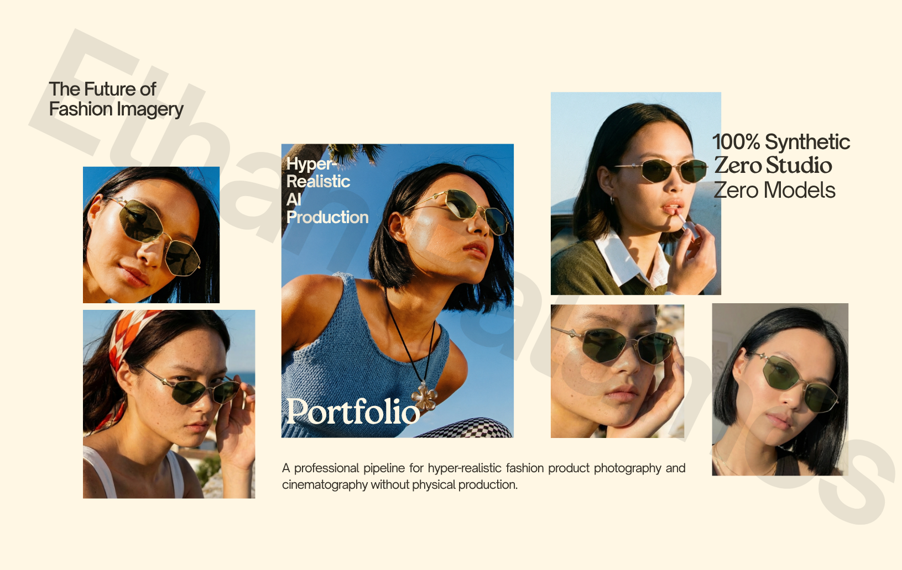
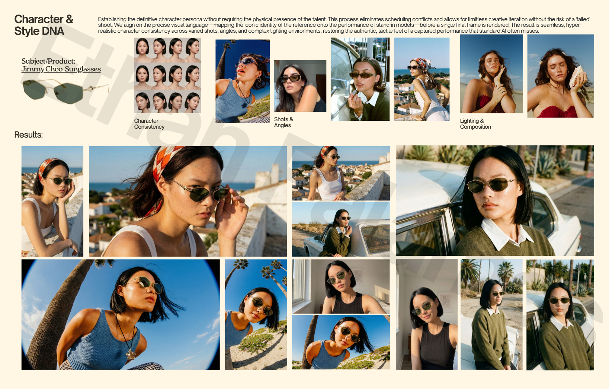
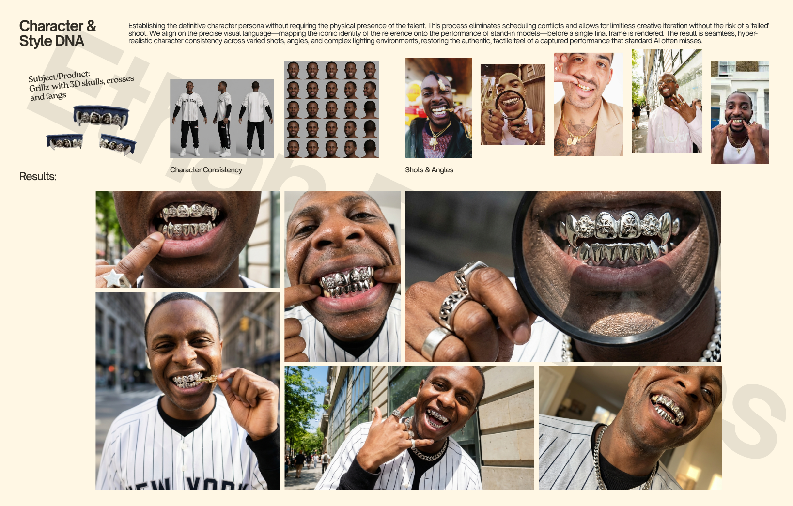
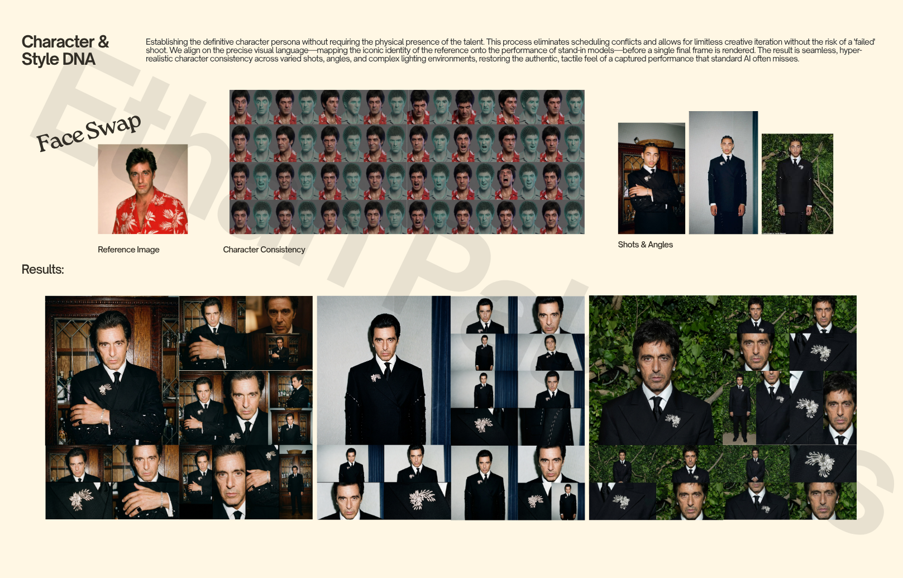

AI systems that work.
Content, operations, automation. I build it with Claude Code so your team doesn't have to.
Content, operations, automation. I build it with Claude Code so your team doesn't have to.
Filter by category, then click a project to see the problem, solution, and system diagram.
100% synthetic. Zero studio. Zero models.
Click any image to enlarge




I build AI systems for content creation and business operations. Social media engines that produce platform-ready content at scale. Product pipelines that turn raw photos into listing-ready images. Automated workflows that replace hours of manual work.
My process: understand how your team works, figure out what AI can handle, build it, hand it over with docs. Everything I build is yours.